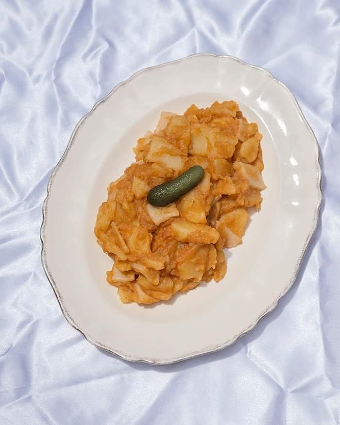

Grenadír podľa @little_meadow_horse — Normy Jedál
March of the Grenadiers. Dish of potatoes and pasta originating from central Europe. Very common in Slovakia. As the name suggests, it was made to feed soldiers before long marches. In my memory, typical food of school canteens accompanied with gherkins on a side. #grenadir #marchofgrenadiers #food #potato #centraleurope #traditional #pasta